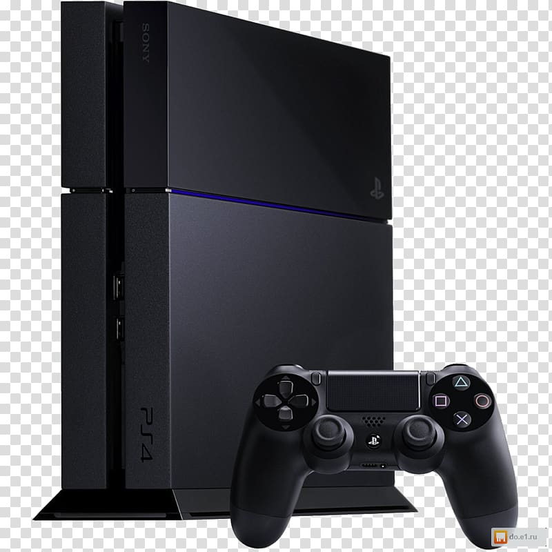

Playstation 4
A PlayStation 4 (プレイステーション4 Pureisutēshon Fō?, oficialmente abreviada como PS4) é uma consola de videojogos, da oitava geração com arquitetura x86, produzida pela empresa Sony Interactive Entertainment e lançada em Novembro de 2013, como a quarta edição da série PlayStation, sucessora da PlayStation 3, competindo directamente com a Wii U da Nintendo e, com a Xbox One da Microsoft. Foi anunciada em Fevereiro de 2013 durante uma conferência de imprensa da Sony em Nova Iorque, no evento "PlayStation Meeting 2013" cujo tema foi "O Futuro da PlayStation". Foi lançada na América do Norte a 15 de Novembro de 2013, na Europa e América do Sul a 29 de Novembro de 2013 e no Japão a 22 de Fevereiro de 2014. A PlayStation 4 é a primeira consola da Sony a ser oficialmente e legalmente editada na China desde a PlayStation 2, depois do levantamento da proibição que durou 14 anos. Afastando-se da arquitectura Cell da sua antecessora, a PlayStation 4 é a primeira da série da Sony que apresenta arquitectura x86, mais especificamente com a Unidade de Processamento Acelerado (UPA) AMD x86-64, uma plataforma amplamente usada e comum em muitos dos microcomputadores modernos. A ideia é fazer com que o desenvolvimento de jogos eletrónicos seja mais fácil para a consola, atraindo uma ampla gama de grandes e pequenos produtores. Estas mudanças destacam o esforço da Sony para melhorar as lições aprendidas durante o desenvolvimento, produção e lançamento da PlayStation 3. Outros recursos de hardware notáveis da PlayStation 4 incluem 8GB GDDR5 de memória, um leitor Blu-ray mais rápido e um GPU que consegue um desempenho de 1.843 TFLOPS/s. Em conversa para a revista Edge, vários produtores de videojogos descrevem a diferença de desempenho entre a PlayStation 4 e a Xbox One como "'significativa' e 'óbvia'".[22]
